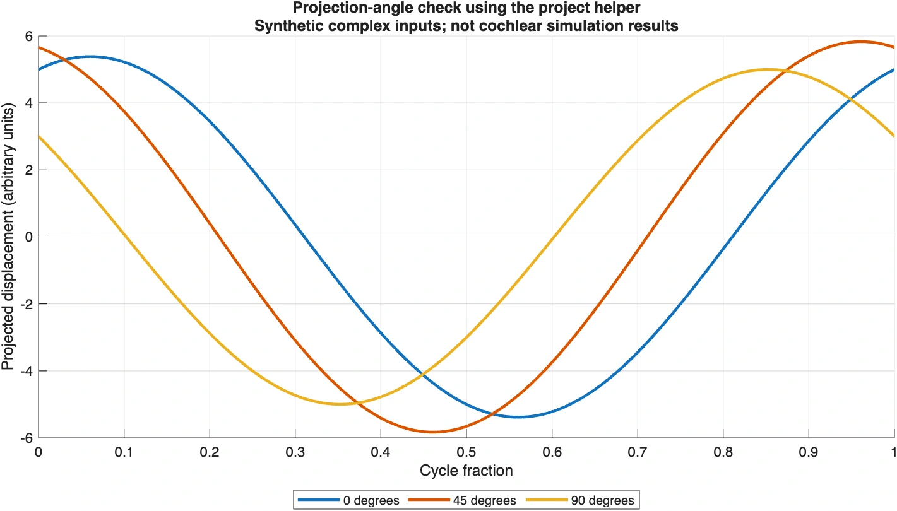

Understanding motion in the cochlea.
I joined the Meaud Lab in August 2025 and have worked on computational cochlear mechanics for three semesters. This semester, my focus includes a MATLAB interface for inspecting model results.
The research involves motion in the organ of Corti, including how three-dimensional anatomy and fluid coupling affect the model’s response.
Explore results without rewriting the plotting script.
I developed a MATLAB application that loads saved frequency sweeps and lets the user choose a longitudinal location, frequency, viewing angle, and grid resolution.
The application organizes file handling, mechanics, geometry, plotting, and validation into separate modules. Views include baseline and deformed geometry, projected magnitude and phase, landmark trajectories, frequency sweeps, and displacement along the cochlea.
-
01
Load a sweep
Saved model output
-
02
Choose a view
Location, frequency, and projection angle
-
03
Inspect the response
Geometry, displacement, magnitude, and phase
The application is in development for research analysis.
Keep the scientific choices visible.
| Input or view | Research purpose |
|---|---|
| Saved frequency sweep | Select the model output to inspect. |
| Longitudinal location and frequency | Inspect a specific location and stimulus condition. |
| Viewing angle and grid resolution | Control the projection and sampled representation. |
| Baseline and deformed geometry | Inspect how modeled structures move relative to their starting geometry. |
| Magnitude, phase, and landmark trajectories | Compare response size, timing, and spatial motion. |
The application separates loading, mechanics, geometry, plotting, and validation so that an issue can be investigated at the relevant stage. The interface is still in development; research use requires checking the projected outputs against the underlying model calculations.
ARO abstract coauthor.
I am a coauthor of the abstract “Active cochlear model with longitudinal motion in organ of Corti and dual traveling waves,” with Julien Meaud, Chaehwan Kim, Wei Dong, and Bastian Meenderink.
The abstract describes an active finite-element cochlear model incorporating scala-media fluid–tectorial-membrane coupling and three-dimensional outer-hair-cell and Deiters-cell anatomy.
Research abstract · Coauthor
Eleven existing helper checks, rerun.
The project’s existing MATLAB test suite passed all 11 checks when rerun for this portfolio on 26 September 2026. The checks cover angle conventions, nearest saved location and frequency, stability flags, valid field locations, animation scale, phase unwrapping, material-point mapping, and agreement between selected-point and field calculations.
The projection helper uses the convention that 0° returns transverse displacement and 90° returns radial displacement. The plot below uses synthetic complex inputs to make the effect of a 45° viewing angle visible.
These are helper-level consistency checks on synthetic fixtures. They do not validate the full cochlear model against experimental data.

